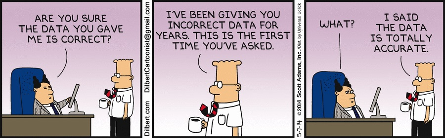
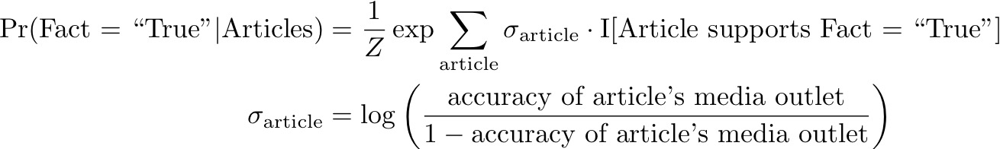
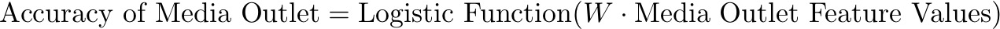
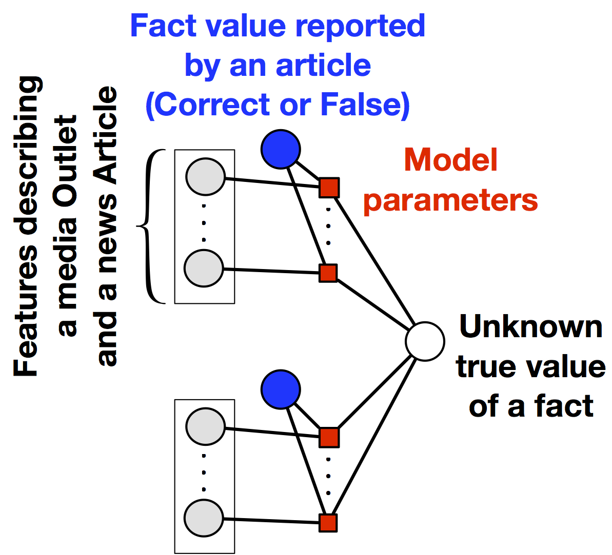

SLiMFast:
Assessing the Reliability of Data
November 24, 2016
Post by Theo Rekatsinas and Chris Ré
And referencing work by other members of Hazy Research.

Data has the ability to change the world like oil did in the early twentieth century. Like oil, poorly refined data can contain impurities. In data, these errors can range from stale information, like Obama wins the election
, to malevolent fearmongering reports such as 10,000 NYC residents possibly exposed to Ebola.
The above situation has been getting a lot of attention lately as tech-giants are looking for methods to identify fake news articles. This is a great opportunity to explore how methods that identify inaccurate data and estimate the reliability of data sources can help in the fight against fake news. Recently, we developed an incredibly simple method called SLiMFast (SIGMOD17) that has three key properties:
It is based on a simple and well-studied statistical model for estimating the reliability of data sources.
Our approach allows users to leverage simple features, such as who the author of an article is or the number of curse words in a news article, to describe the reliability of data sources and assess the truthfulness of data.
Our approach can scale to large corpora.
SLiMFast can not only detect inaccuracies in data but also enables non-experts to obtain insights as to why sources might be unreliable.
Estimating the accuracy of data sources is key to assessing the reliability of data. In SLiMFast we model source accuracy as the probability that the information reported by a data source is correct.
In today's deluge of information, it is common that different sources provide data that describes the same object, e.g., a real-world event, crime rates, financial data, etc. When errors are not deliberate but accidental and random plurality allows us to detect and correct inaccurate data. Specifically, the collective wisdom of the majority suffices to identify the truth for different objects. However, reality can be quite different. Sources can report fake data on purpose. They may also collude and copy from each other. Under these circumstances, plurality does not work anymore. For example, majority fails for online news because fake news stories may be shared and replicated dramatically more often than actual news. As a consequence, we need more sophisticated models to handle these scenarios.
Simple features can help identify inaccurate data and unreliable sources. Consider news articles: The author, number of misspellings or the use of curse words may be enough to detect a hoax article.
In SLiMFast, we follow a very simple approach to identify the reliability of data: We model the accuracy of a data source as the probability that the information reported by the source is correct. Then, we ask users to provide features they believe to be informative of the reliability of sources and use those to estimate the accuracy of data sources. Despite being simple, the observation that features of a data source can be indicative of its accuracy has been overlooked by previous approaches. Now, with all of the politically-charged talk about banning fake news
sites, it seems appropriate to examine how reasoning about source features can help assess the reliability of media outlets and detect fake news stories.
Hoax stories are not something new. However, given how fast social networking can make stories go viral and the fact that even humans may have trouble spotting fake news, how can one spot fake news? In general, detecting fake news stories can be difficult. However, there are cases where simple rules can help. Recent articles in reputable news portals such as Washington Post, NBC News, and O'Reilly Media list a few guidelines:
(i) Consider the domain: Is it a newly registered web domain similar to an existing one? For example consider the hoax website abcnews.com.co versus the reliable abcnews.go.com.
(ii) Check the author. A reputable and known journalist is less likely to publish a fake article.
(iii) Check the Contact Us
information.
(iv) Consider web-related statistics of the domain where an article was posted, e.g., how long has the site been around, or how often is it referenced by other sites that have been determined to be reputable.
(v) Crosscheck the content of a source against reputable sources. For example, when a reputable fact-checking organization like Snopes or Politifact reports a story as false, that's a strong signal.
All these features can be informative of the accuracy of sources and useful for detecting errors in data. In SLiMFast, we can support all these features and rely on classical statistical theory to combine them.
In our paper, we used SLiMFast to identify false mentions of demonstrations in news articles. We considered a collection of articles from online news domains and blog posts reporting demonstrations in Africa from January, 2015 to April, 2015. Our goal was to identify if a reported demonstration occurred in reality.
In our experiments we find that SLiMFast can very accurately distinguish correct demonstration reports from false ones with an accuracy of 90%. On the other hand state-of-the-art methods give results that are only 70% accurate.
For our analysis we used features corresponding to web-related traffic statistics of the domain publishing each of the articles. For each domain we obtained the following traffic statistics from Alexa.com:
(i) Global rank and country rank
(ii) Bounce rate, i.e., the percentage of visitors to a particular website who navigate away from the site after viewing only one page
(iii) Daily page views per visitor and daily time on site
(iv) Search visits
(v) Total sites linking in, a proxy for PageRank
We found that the most important features for identifying the accuracy of data sources correspond to daily usage statistics, such as the Bounce Rate
(with low bounce rate implying higher accuracy), and the Daily Time on Site
(with low implying low accuracy). On the other hand, the number of Total Sites Linking In
, i.e., a proxy for PageRank, is not found to be important. The latter is rather controversial as PageRank is considered a strong signal of reliability by many.
In our paper, we show that using source features to estimate the reliability of data is not only applicable to news but also extends to other domains including finance and crowdsourcing among others. SLiMFast not only beats state-of-the-art methods but also helps answer a series of open problems in data integration, such as how to estimate the accuracy of a source when no data has been obtained from it. All this is described in detail in our SIGMOD 2017 paper.
So what is happening under the hood? How are the different signals described above combined into a unified model?
For simplicity of exposition, we describe SLiMFast's model for the domain of fake news. A more technical description is provided in our paper. Consider a collection of facts stated in news articles. Different news articles may report if a fact is correct or false. SLiMFast's goal is to estimate the truthfulness of each fact, i.e., if the fact is indeed correct or false. To do so, SLiMFast estimates the accuracy of each media outlet (viewed as a data source here) publishing each article that reports on a fact. Different articles can provide conflicting values for the same fact. Therefore, the true value of each fact is unknown. Moreover, the accuracy of each media outlet is unknown. To capture this uncertainty we associate each fact with a random variable and the accuracy of outlets with weight parameters in a statistical model over these random variables. This way we express the problem of finding the true value for each fact and the accuracy of each media outlet as a statistical learning and inference problem.
In SLiMFast users only need to think of features and not algorithms.
The statistical model used in SLiMFast corresponds to a probabilistic graphical model, a standard tool for encoding probability distributions over complex domains. This model allows us to integrate features of the media outlets and the news articles they publish, as well as richer correlations across the media outlets, e.g., copying behavior. SLiMFast's probabilistic graphical model is implemented over DeepDive, our lab's declarative probabilistic learning and inference framework. As a result, SLiMFast is easily extensible. Users only need to specify features and do not have to worry about algorithms!
We find that in many cases relying only on source features allows SLiMFast to determine the true value of facts and estimate the accuracy of data sources very accurately. In these cases, SLiMFast's model corresponds to a simple logistic regression model. Logistic regression is a standard model from statistical theory that is used to predict whether a target variable (e.g., a fact here) is True
or False
, based on observed characteristics of the variable (e.g., which news media outlets reported the fact to be correct or false). Given such a logistic regression model we can estimate the truthfulness of a fact by computing the posterior Pr(Fact = True
| Articles) as:

where Z is a normalizing constant to obtain a valid probability distribution and I[] corresponds to the indicator function taking value one when its arguments evaluates to true. In this model, we assume that the accuracy of a news article is the same as the accuracy of the news media outlet that published that article.
In many cases, SLiMFast uses a simple logistic regression model parameterized by source features to identify inaccurate data and estimate the accuracy of data sources. SLiMFast can support richer correlations as it is built on top of a probabilistic graphical model.
In the above logistic regression model the accuracy of the media outlets is unknown. This is where SLiMFast uses the features describing the media outlet to estimate the accuracy of each outlet. To do so we again use a simple logistic model:

where W is a weight vector capturing the effect of features on the accuracy of a media outlet. The estimated accuracies are then to parameterize the logistic regression model shown above. Since the accuracies are estimated via a logistic function over source features the overall model corresponds to logistic regression model parameterized by the media outlet features. The overall model is shown in the figure below.

A schematic of SLiMFast's discriminative model. The target variables correspond to the latent truth for facts reported in the news. The model parameters are weights capturing the effect of features on the media outlet accuracies.
Now, all we need to do is just use some training data, e.g., facts from news articles labeled as correct or false, to train the logistic regression model. In our paper, we show that due to the presence of features describing data sources, a surprisingly small amount of labeled data—of the order of features—suffices to estimate the accuracy of data sources and truthfulness of data with high confidence.
Comparing SLiMFast against a state-of-the-art method that does not consider source features: With a small number of training examples, SLiMFast can predict very accurately if the facts reported in news articles are correct or not. A detailed comparison against diverse baselines is reported in our paper.
Even when no training data is available, we can obtain guarantees on SLiMFast's output. In our paper we characterize under which scenarios unsupervised learning methods can be used to estimate the accuracy of data sources and the reliability of data with high confidence. We show that in reality there is a trade-off between using supervised and unsupervised learning methods and design an optimizer that automatically identifies which of the two methods will yield a more accurate model.
Finally, handling scale is not a problem for SLiMFast. Since SLiMFast is implemented on top of DeepDive, we are able to rely on some of our lab members' award-winning work on asynchronous Gibbs sampling and DeepDive's efficient Gibbs sampler to scale to large corpora. As for making the collection of source features and training examples easier, we are excited to explore how Snorkel, our lab's latest platform for programmatic weak-supervision and lightweight information extraction, can be used together with SLiMFast. This might be the secret to winning the fight against fake news!
A few things we are excited about:
In our paper we report some exciting results on the domain of Genomics research. We are actively collaborating with some bio-friends to examine how SLiMFast can help assess the truthfulness of facts reported in the scientific literature at a large-scale.
We aim to examine if SLiMFast can be applied to streaming domains such as monitoring social media, online news portals, etc.
We are actively exploring how the principles behind SLiMFast can be extended to other problems in the data integration realm such as data cleaning.